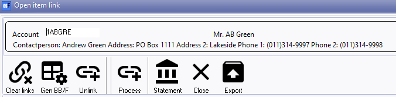
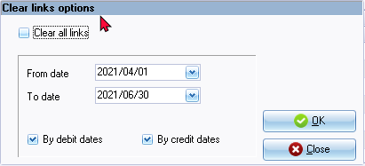
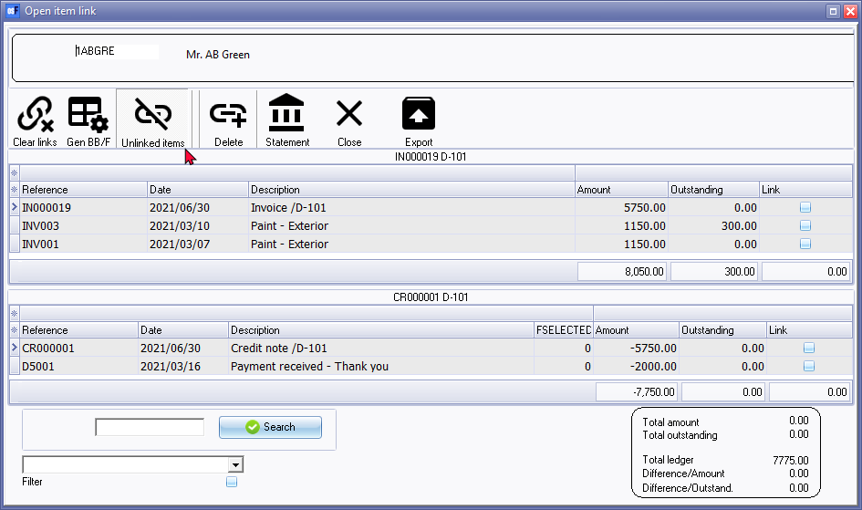
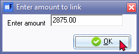

Open item processing - Selected accounts
The "Open item link" for a specific ledger account, debtor (customer / client) account or a creditor (supplier / vendor) account may be opened with a double-click from the Totals tab or Transactions tab on "Open item link".
|
|
Accounts which contains unlinked (unmatched) transactions, will be listed in an orange font or row colour on the Totals tab (if the "Show colours" option is selected). |

Icon options
The icons on the "Open item link" screen for a selected account:

|
|
Contactperson, Address 1, Address 2, Phone 1 and Phone 2 is only displayed for a selected debtor (customer / client) account or a selected creditor (supplier / vendor) account. This is not applicable to a selected ledger account, |
Clear links
This option will clear links according to the options you select.
If you click on the Clear links icon, a confirmation message is displayed:
"Warning, if you click yes you will lose all your current links for this account!"
If you click on the Yes button of the confirmation message, the "Clear links options" screen is displayed:

Generate BBF
This option will clear all the open item links, and generate the ageing as balance brought forward account for a selected ledger, debtor or creditor account, according to the options you select.
If you click on the Generate BB/F icon, a confirmation message is displayed:
"Warning, if you click yes you will lose all your current links for this account!"
If you click on the Yes button of the confirmation message, the "Generate Balance BF options" screen is displayed:

Unlink
This option allows you to unlink a selected linked debit and credit transactions.
The Unlink icon will change to Unlinked items and the Process icon will change to Delete icon. This will list all transactions as linked. If any transaction is not fully linked, it will list the outstanding amount for the transaction.

You may select a debit transaction(s) to unlink to a credit transaction(s) (tick the "Link" column) and click on the Delete icon to remove the link of selected transactions.
Process
Any linked transaction(s) will be removed from the debit or credit sections of the “Open item link” screen.
Select a debit transaction(s) to link to a credit transaction(s) (tick the "Link" column) and click on the Process icon. The "Enter amount to link" screen will display, by the default, the amount of the selected transaction to enter.

You need to confirm or over-type the amount, if necessary and click OK.
If the amounts of the selected transactions is the same, the debit and credit transactions will be removed from the "Open item link" screen.
If the amounts of the selected transactions differs (is not the same), the debit or credit transaction will be removed from the "Open item link" screen and the amount of a transaction which is not fully linked, will be adjusted in the "Outstanding" column.
Statement
Click to view the selected account in a statement layout with the ageing labels (e.g. Current, 30 days, 60 days, etc.). You may select the dates from which and until which date to include items.
Close
Close the "Open item link" screen for the selected account and return to Totals tab or Transactions tab of the "Open item link" main screen.
Export
The Export icon will create an Export.txt (Text files), which you may change the name and folder and save it. A Comma separated (CSV) file format is also available.
This will export the list, as selected and/or filtered and displayed in the "Open item link" screen for a selected account, as a comma separated text file as a "Export.txt" file. The Exported file will automatically be opened in your in your system's app (program) associated with the CSV (Comma Separated Values) file types.
Context menu processing options
In the "Debit" (top half) or "Credit" (bottom half) section of the selected account, right-click on a selected transaction on the list, to launch the context menu for the following processing options:

|
|
When the Statement option is selected for a selected account, only the "Unlink" option will be available for a selected transaction. |

Filter options
You may apply the following options to filter transactions:

You may double-click on a selected account on the Totals tab or Transactions tab to process open item links.
|
|
Document entry context menu - Right-click on a selected document. On the context menu, select the Others → Open item link option. The Invoice, Credit note or Quote document type will list the "Open item link" screen associated with the debtor (customer / client) account. The Purchase, Supplier return or Orders document type will list the "Open item link" screen associated with the creditor (supplier / vendor) account. |
|
|
Batch entry context menu - Right-click on a selected transaction. On the context menu, select the "Select from account open item list" option. The "Open item selection" screen will list the unlinked transactions as well as transactions with outstanding amounts for the selected debtor (customer / client) or creditor (supplier / vendor) account. |
|
|
Transactions tab of a selected debtor (customer / client) account - This list the posted transactions similar to the "Open item link" screen.
Transactions tab of a selected creditor (supplier / vendor) account - This list the posted transactions similar to the "Open item link" screen.
|